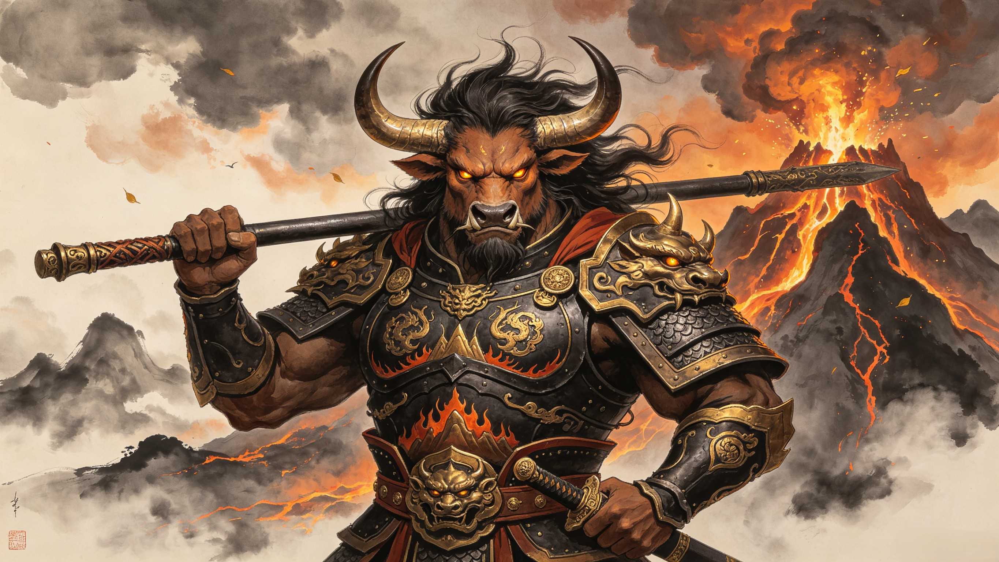

The Great Bull King
牛魔王
Sworn brother to the Monkey King. Lord of Flaming Mountain. Master of the primordial true form — a colossal white bull that shakes the earth. When heaven came for him, he did not kneel. He transformed, he raged, and he fought them all.
Before he was an enemy of the pilgrimage, the Bull Demon King was Sun Wukong's sworn brother — one of the Seven Sages of the Mountains. They feasted together, fought together, and called each other kin. The Bull Demon King was the eldest among them, the most powerful, the one even Wukong deferred to. Their brotherhood was forged in the golden age before heaven took notice — when demon kings ruled the mountains and answered to no celestial bureaucracy.
After Wukong was imprisoned beneath Five Elements Mountain, the Bull Demon King built his own kingdom. He took Princess Iron Fan as his wife, fathered Red Boy, and ruled the lands around Flaming Mountain with absolute authority. Unlike Wukong who sought heaven's recognition, the Bull Demon King wanted nothing from the gods — only to reign over his own domain in unchallenged power. His court was a gathering place for demons and monsters, and his name alone made celestial soldiers hesitate.
When Tang Sanzang's pilgrimage reached Flaming Mountain, the flames blocked their path — and only Princess Iron Fan's magical Banana Leaf Fan could extinguish them. Sun Wukong came to his old sworn brother asking for help. But the Bull Demon King had not forgotten: Wukong had betrayed their brotherhood, and worse — Guanyin had taken Red Boy as a disciple. What should have been a reunion of brothers became a battle of betrayal, pride, and rage that would shake the very foundations of the mountain.
What followed was one of the largest battles in Journey to the West — not a skirmish but a full-scale war. The Bull Demon King fought Sun Wukong, Zhu Bajie, Nezha, and eventually the armies of heaven itself. He transformed into a colossal white bull, shook the earth, and refused to yield even when outnumbered a hundred to one. Heaven sent battalion after battalion. Nezha rode his Fire Wheels into battle. The fight raged across the skies until the very stars seemed to tremble. In the end, it took all of them — Wukong, Bajie, Nezha, and celestial reinforcements — to bring the Bull Demon King to his knees.
Nezha rode his Fire Wheels onto the Bull Demon King's back and bound him with celestial chains. The Great Bull King was dragged before the Buddha and the Jade Emperor — not executed, but subdued, his fate left ambiguous in the classic text. Some traditions say he was forced into heaven's service. Others say he was imprisoned beneath a mountain like Wukong before him. But what endures is the image of his final stand: a single demon king facing the full might of heaven's armies, a white bull raging against the sky, refusing to bow until there was simply no strength left in his body. He lost the war. He never lost his pride.
From mountain spirit to sworn brother — the rise of the bull before the fall, and the ancient demon lineage he commanded.
The full-scale celestial war: Sun Wukong, Nezha, Zhu Bajie, and heaven's armies against one demon king who refused to yield.
The mixed iron pole, twin swords, the Banana Leaf Fan, and the terrifying true form — the arsenal of a demon sovereign.
Flaming Mountain — the volcanic domain the Bull Demon King ruled with iron authority. Geography, myth, and the pilgrim's obstacle.
Princess Iron Fan, Red Boy, the fox spirit concubine — the household that became the pivot point of the pilgrimage's greatest crisis.
From Journey to the West villain to folk hero — how the Bull Demon King became one of Chinese mythology's most beloved antagonists.
Your words will be forged in iron and flame, preserved in the great hall of the demon sovereign.
Dive Deeper